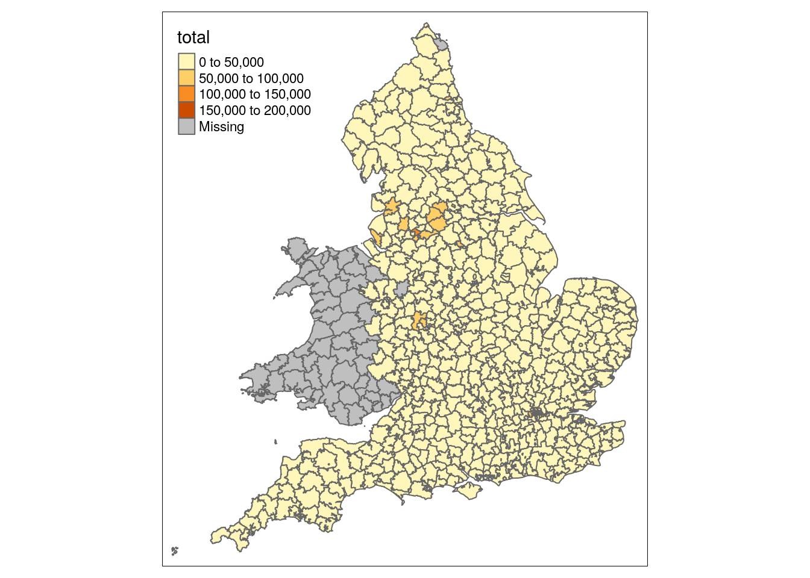

We have a spatial dataframe (step 1), now we want to add our data-of-interest to visualise on the thematic map. Two steps:
Crucial for linking: have a variable/column in your that contains the appropriate spatial identifier. E.g. Census-identifer, NIS-code, NUTS-code, etc.
How to read in your data depends on the format, three recommended R-packages should cover mosts posibilities:
library(here)
library(tidyr)
library(readxl)
library(dplyr)
library(sf)
library(tmap)# census 1851 datafile: 156.300 records x 11 variables
census_data <- read_xlsx(here('data/source/census1851_occupations_count.xlsx'))# show records 1 to 10
census_data %>%
slice(1:10)## # A tibble: 10 x 11
## county_name district_name district_id sex occupation_label
## <chr> <chr> <dbl> <chr> <chr>
## 1 Bedfordshi… Ampthill 181 F agricultural la…
## 2 Bedfordshi… Ampthill 181 F annuitant
## 3 Bedfordshi… Ampthill 181 F baker
## 4 Bedfordshi… Ampthill 181 F blacksmith
## 5 Bedfordshi… Ampthill 181 F butchers wife
## 6 Bedfordshi… Ampthill 181 F charwoman
## 7 Bedfordshi… Ampthill 181 F cowkeeper, milk…
## 8 Bedfordshi… Ampthill 181 F dau, granddau, …
## 9 Bedfordshi… Ampthill 181 F domestic servan…
## 10 Bedfordshi… Ampthill 181 F domestic servan…
## # … with 6 more variables: occupation_count <dbl>, pst_a_code <dbl>,
## # pst_b_code <dbl>, pst_c_code <dbl>, pst_d_code <dbl>,
## # pst_a_label <chr>Exploring and manipulating data uses tidyverse “verbs”: filter, select, group_by, join, tally, mutate, etc.
census_data %>%
group_by(sex) %>%
tally(occupation_count)## # A tibble: 2 x 2
## sex n
## <chr> <dbl>
## 1 F 4775509
## 2 M 4399377census_data %>%
group_by(sex, pst_a_label) %>%
tally(occupation_count) %>%
spread(sex, n)## # A tibble: 7 x 3
## pst_a_label F M
## <chr> <dbl> <dbl>
## 1 no_occupation 2698848 120789
## 2 primary 285660 1298589
## 3 secondary 762586 1730702
## 4 sector_unspecific 5001 249180
## 5 tertiary_dealers 18140 87801
## 6 tertiary_sellers 47306 119377
## 7 tertiary_services_professions 957968 792939census_data %>%
group_by(sex, pst_a_label) %>%
tally(occupation_count) %>%
spread(sex, n) %>%
mutate(pct_women = F / ( F + M) )## # A tibble: 7 x 4
## pst_a_label F M pct_women
## <chr> <dbl> <dbl> <dbl>
## 1 no_occupation 2698848 120789 0.957
## 2 primary 285660 1298589 0.180
## 3 secondary 762586 1730702 0.306
## 4 sector_unspecific 5001 249180 0.0197
## 5 tertiary_dealers 18140 87801 0.171
## 6 tertiary_sellers 47306 119377 0.284
## 7 tertiary_services_professions 957968 792939 0.547census_data %>%
filter(occupation_label == 'baker') %>% # select only records with occup 'baker'
group_by(county_name) %>%
tally(occupation_count) %>% # count bakers, grouped by county
arrange(desc(n)) # sort descending on number of bakers## # A tibble: 42 x 2
## county_name n
## <chr> <dbl>
## 1 London 10321
## 2 Lancashire 3503
## 3 Kent 1681
## 4 Devonshire 1552
## 5 Hampshire 1364
## 6 Somerset 1353
## 7 Gloucestershire 1338
## 8 Essex 1214
## 9 Warwickshire 1180
## 10 Yorkshire West Riding 1141
## # … with 32 more rowsdistricts_data <- census_data %>%
group_by(district_id, district_name, pst_a_label) %>%
tally(occupation_count) %>%
spread(pst_a_label, n)
districts_data <- districts_data %>%
mutate(total = primary + secondary + tertiary_dealers + tertiary_sellers + tertiary_services_professions + sector_unspecific + no_occupation) %>%
mutate(pct_secondary = secondary / total)
districts_data## # A tibble: 576 x 11
## district_id district_name no_occupation primary secondary
## <dbl> <chr> <dbl> <dbl> <dbl>
## 1 1 Kensington 21466 2274 12367
## 2 2 Chelsea 10610 529 7884
## 3 3 St George Ha… 12506 256 8937
## 4 4 Westminster 12973 343 10535
## 5 5 St Martins-i… 4187 72 4198
## 6 6 St James Wes… 5795 123 7619
## 7 7 Marylebone 27911 1140 24945
## 8 8 Hampstead 1860 293 1009
## 9 9 Pancras 31016 943 28843
## 10 10 Islington 18193 933 13589
## # … with 566 more rows, and 6 more variables: sector_unspecific <dbl>,
## # tertiary_dealers <dbl>, tertiary_sellers <dbl>,
## # tertiary_services_professions <dbl>, total <dbl>, pct_secondary <dbl>Join spatial and non-spatial dataframes using general dataframe-join functions (online cheatsheet for types of joins).
# Example syntax:
library(dplyr)
data <- left_join(spatial_data, data_of_interest, by = "identifier")
data <- left_join(spatial_data, data_of_interest, by = c("spatial_identifier" = "data_identifier"))Example: join spatial data on districts, and calculated data and percentages on occupations.
# load spatial data on districts
districts_spatial <- st_read(here('data/source/census_1851_districts/1851EngWalesRegistrationDistrict.shp')) %>%
mutate(CEN1 = as.numeric(as.character(CEN1))) # make sure identifiers are the same type as in the district data# add population data on district-level to the spatial data-set
districts <- left_join(districts_spatial, districts_data, by = c('CEN1' = 'district_id'))districts## # A tibble: 1,198 x 17
## CEN1 R_DIST R_CTY R_DIVNO R_DIV R_CTRY district_name no_occupation
## <dbl> <fct> <fct> <fct> <fct> <fct> <chr> <dbl>
## 1 3 ST GE… LOND… I LOND… ENGLA… St George Ha… 12506
## 2 6 ST. J… LOND… I LOND… ENGLA… St James Wes… 5795
## 3 7 MARYL… LOND… I LOND… ENGLA… Marylebone 27911
## 4 8 HAMPS… LOND… I LOND… ENGLA… Hampstead 1860
## 5 10 ISLIN… LOND… I LOND… ENGLA… Islington 18193
## 6 11 HACKN… LOND… I LOND… ENGLA… Hackney 10897
## 7 12 ST GI… LOND… I LOND… ENGLA… St Giles 9990
## 8 14 HOLBO… LOND… I LOND… ENGLA… Holborn 8536
## 9 16 ST LU… LOND… I LOND… ENGLA… St Luke 9881
## 10 18 WEST … LOND… I LOND… ENGLA… West London 4836
## # … with 1,188 more rows, and 9 more variables: primary <dbl>,
## # secondary <dbl>, sector_unspecific <dbl>, tertiary_dealers <dbl>,
## # tertiary_sellers <dbl>, tertiary_services_professions <dbl>,
## # total <dbl>, pct_secondary <dbl>, geometry <POLYGON [m]>qtm(districts, fill = 'total')